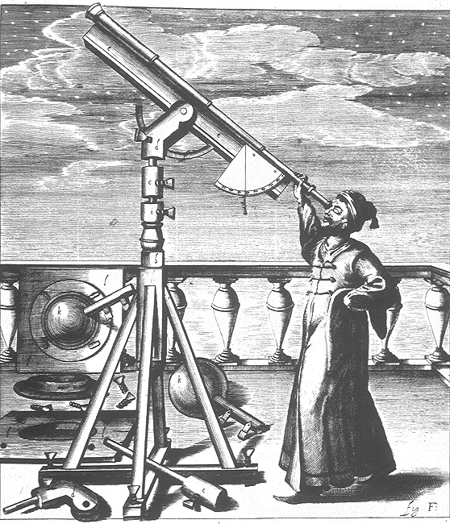
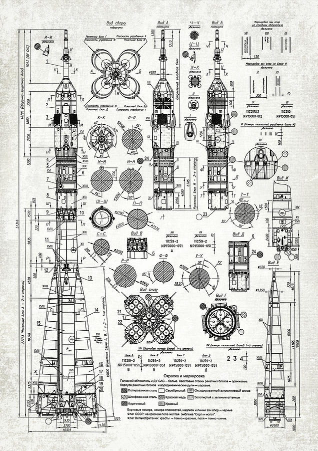
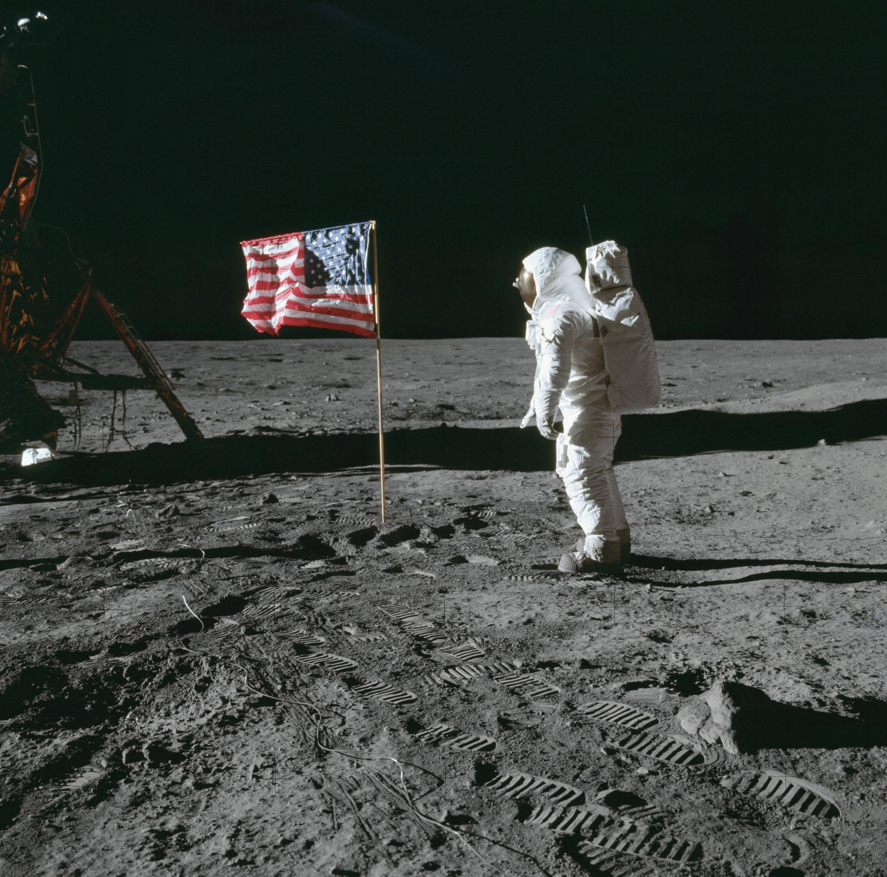
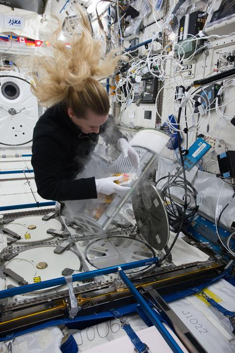
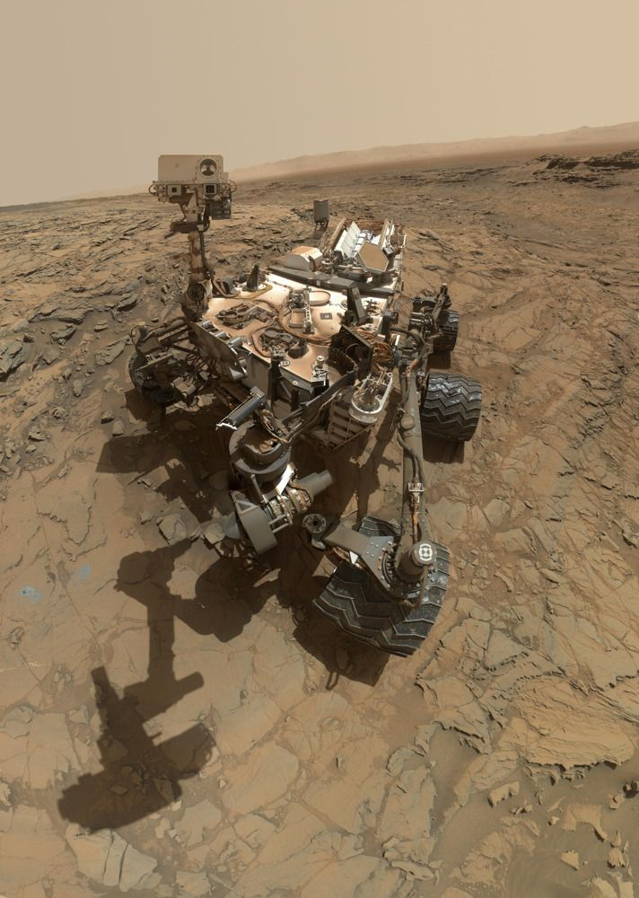
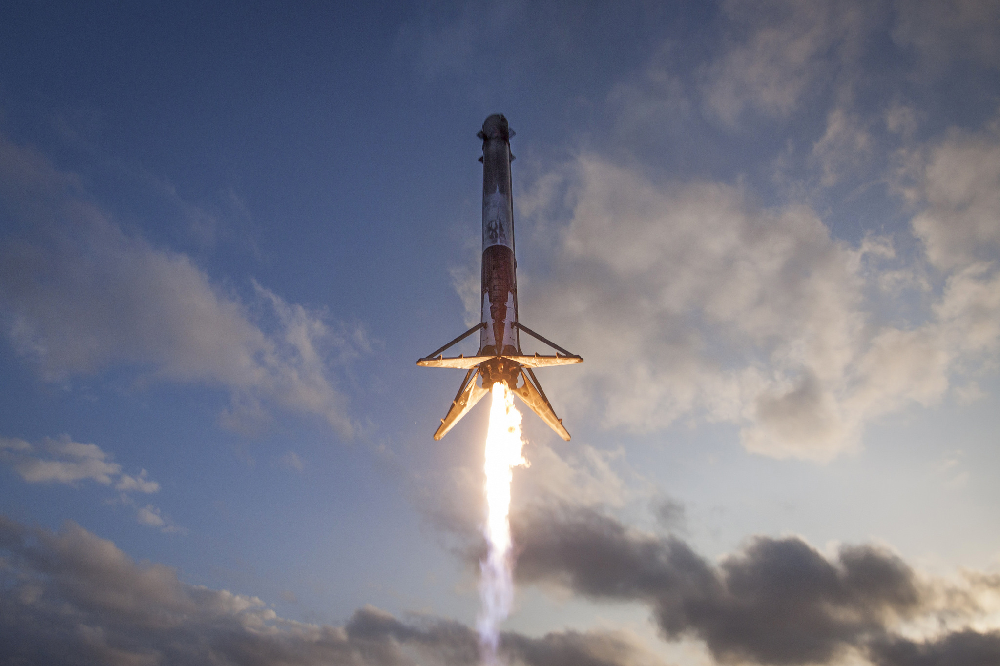
For thousands of years, humanity looked up at the night sky with curiosity, fear, and wonder. What began as simple stargazing slowly transformed into science, ambition, and exploration. From ancient civilizations mapping the stars to rockets escaping Earth’s gravity, the journey to space is a story of patience, imagination, and relentless human determination. Space exploration is not just about planets and rockets—it is about how far humans are willing to go to understand their place in the universe.
As knowledge grew, curiosity turned into courage. Telescopes revealed distant worlds, equations unlocked the laws of motion, and imagination pushed humans to dream beyond Earth’s limits. Each discovery became a stepping stone—from understanding the Sun and planets to daring missions that carried machines, and eventually people, into space. What once felt unreachable slowly became possible, proving that progress is born when curiosity meets perseverance.
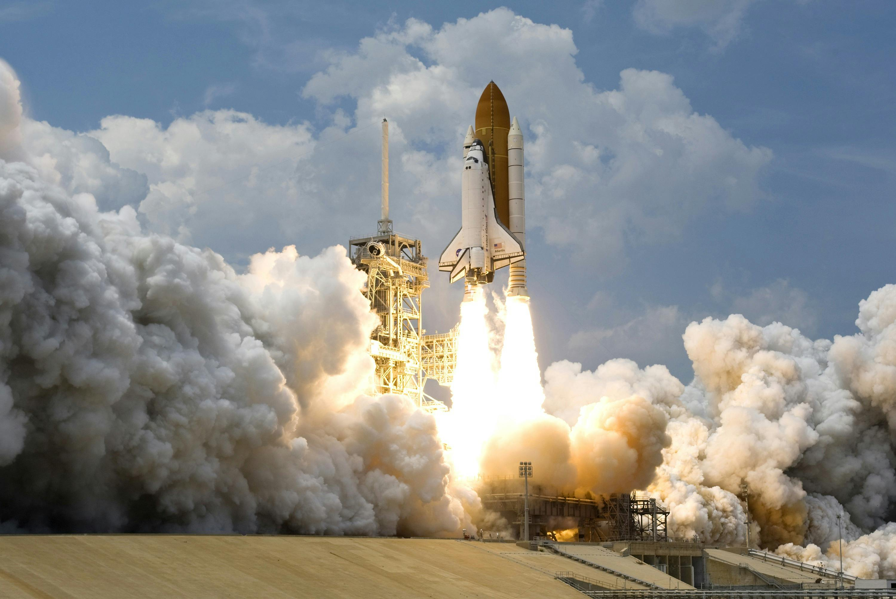
“To explore space is to understand ourselves.”






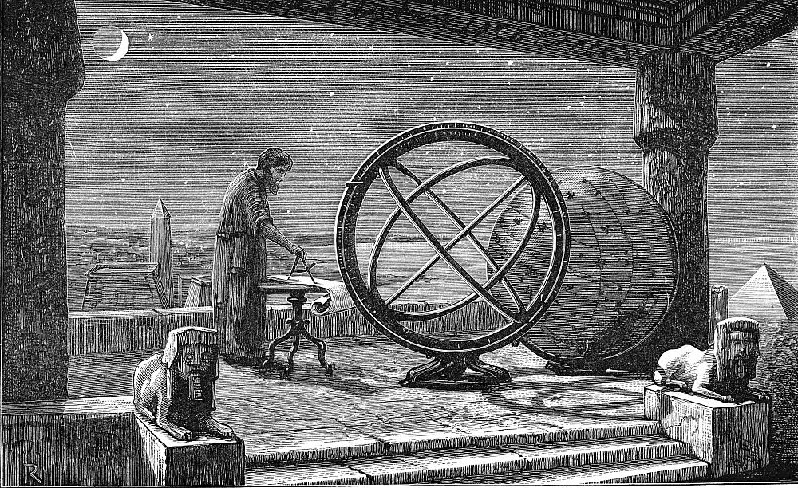
Long before modern science, ancient civilizations carefully observed the sky to understand time, seasons, and navigation. The Babylonians recorded planetary movements, the Egyptians aligned pyramids with stars, and the Mayans created complex calendars based on celestial cycles. Although they could not travel to space, these early observations formed the foundation of astronomy and proved that the universe followed patterns that humans could study and predict.
As generations passed, this shared knowledge of the sky was preserved through myths, symbols, and early scientific records. Stars were not just distant lights but guides, gods, and storytellers that shaped cultures and beliefs. By tracking the heavens night after night, ancient astronomers unknowingly sparked humanity’s first scientific curiosity—proving that the journey to the stars began not with rockets, but with questions.
For early civilizations, the sky was humanity’s first teacher. The Babylonians, around 1900–1600 BCE, meticulously recorded planetary movements and lunar cycles on clay tablets, creating the first known astronomical diaries (source: NASA History Office). Egyptians aligned the Great Pyramid of Giza (c. 2580–2560 BCE) with the star Alnitak in Orion’s Belt, showing they used stellar observations for architectural precision (Journal of Ancient Egyptian Astronomy). The Mayans developed the Tzolk’in calendar around 2000 BCE, tracking the cycles of the Sun, Moon, and Venus for agriculture and ritual purposes (National Museum of Anthropology, Mexico). These early practices demonstrate that astronomy began as a practical science—tracking celestial patterns to survive and thrive—laying the groundwork for systematic observation and long-term record keeping.
Ancient societies did not separate science from belief. The stars were woven into myths that explained creation, life, and destiny. Constellations became heroes, animals, and gods, turning the night sky into a living storybook. While these stories were symbolic, they also preserved astronomical knowledge in a form people could remember. By linking the heavens to culture and belief, ancient astronomers ensured that their observations would survive long after they were gone, blending imagination with early science in a way that shaped civilizations.
Although ancient astronomers lacked modern technology, their methods reflected the core principles of science. They observed carefully, recorded changes, and searched for patterns over long periods of time. This discipline proved that the universe was not random, but structured and predictable. Their work laid the groundwork for future discoveries by showing that nature could be studied, understood, and anticipated. In this way, ancient astronomy became the foundation upon which modern science was built, turning curiosity into a powerful force that would one day carry humanity beyond Earth.
The invention of the telescope marked a turning point in humanity’s relationship with space. Astronomers like Galileo Galilei revealed that the Moon had mountains, Jupiter had moons, and Earth was not the center of the universe. This era replaced myth with evidence and challenged long-held beliefs, proving that space was a physical place governed by laws, not legends.
At the same time, the Scientific Revolution introduced a new way of thinking about the universe: the scientific method. Thinkers like Johannes Kepler used precise mathematical laws to explain planetary motion, while Isaac Newton later showed that the same laws of gravity controlled both falling objects on Earth and the movement of planets in space. This was a huge mindset shift—space was no longer mysterious or random, but predictable and measurable. For the first time, humans realized that by using math, experiments, and observation, they could truly understand how the cosmos works, not just admire it.
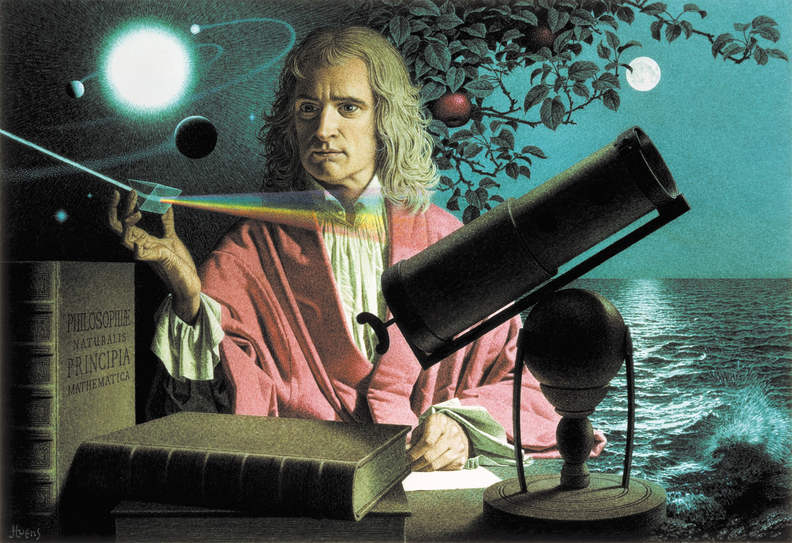
The invention of the telescope in the early 17th century completely reshaped humanity’s understanding of the universe. In 1609, Galileo Galilei improved upon earlier Dutch telescope designs and used it to observe the night sky (NASA History Division). Through his telescope, Galileo discovered mountains and craters on the Moon, proving that celestial bodies were not perfect, smooth spheres as Aristotle had claimed for centuries. He also observed sunspots, showing that even the Sun changed over time (European Space Agency – History of Astronomy). These observations directly challenged ancient philosophical beliefs and marked the beginning of astronomy as an evidence-based science rather than a field guided by tradition and authority.
One of Galileo’s most groundbreaking discoveries was the observation of four moons orbiting Jupiter in 1610, now known as the Galilean moons: Io, Europa, Ganymede, and Callisto (NASA Solar System Exploration). This discovery proved that not everything in the universe revolved around Earth, supporting Nicolaus Copernicus’s heliocentric model, first proposed in 1543. Later astronomers such as Johannes Kepler used precise observational data from Tycho Brahe to show that planets move in elliptical orbits, not perfect circles (Royal Astronomical Society). Together, these findings replaced belief-based cosmology with mathematical laws, shifting humanity’s worldview from Earth-centered thinking to a universe governed by measurable rules.
The Scientific Revolution did more than change astronomy—it laid the foundations of modern physics. In 1687, Isaac Newton published Philosophiæ Naturalis Principia Mathematica, introducing the laws of motion and universal gravitation, which explained both falling apples and planetary motion using the same principles (Royal Society, UK). For the first time, the motion of planets, moons, and objects on Earth could be predicted with equations. This unified view of nature proved that space was not mystical or unreachable—it followed the same physical laws everywhere. These breakthroughs transformed space from a realm of legends into a measurable, predictable environment, setting the stage for rockets, satellites, and space exploration centuries later.
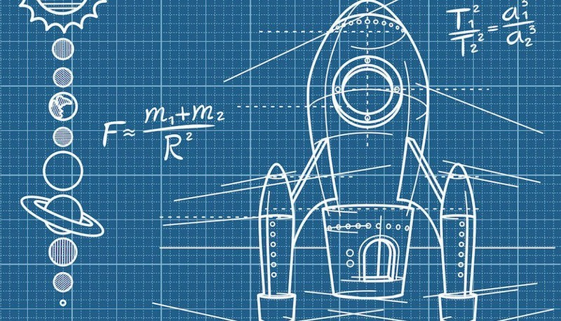
In the early 20th century, scientists began turning dreams into equations. Visionaries like Konstantin Tsiolkovsky and Robert Goddard developed the mathematics and technology needed for rockets to escape Earth’s gravity. Though many doubted them, their work proved that space travel was scientifically possible, laying the groundwork for future missions.
As rocket theory progressed, experiments began to back up the math. In 1926, Robert Goddard launched the first liquid-fueled rocket, proving that rockets could be powerful, controllable, and capable of reaching extreme altitudes. New ideas like multi-stage rockets showed that shedding weight during flight made escaping Earth’s gravity possible. These breakthroughs transformed rockets from risky experiments into reliable technology and directly paved the way for the Space Race and modern space exploration.
At the start of the 20th century, space travel moved from fantasy into science through mathematics. In 1903, Russian scientist Konstantin Tsiolkovsky published The Exploration of Cosmic Space by Means of Reaction Devices, where he introduced the rocket equation, proving mathematically that rockets could escape Earth’s gravity (NASA History Division). He also proposed ideas such as liquid-fueled rockets, multi-stage rockets, and space stations long before the technology existed (European Space Agency – History of Spaceflight). Tsiolkovsky showed that reaching space was not impossible—it was a problem that could be solved with physics and engineering.
While Tsiolkovsky worked with equations, American physicist Robert H. Goddard turned theory into practice. In 1926, Goddard successfully launched the world’s first liquid-fueled rocket in Massachusetts (Smithsonian National Air and Space Museum). His experiments proved that rockets could function in a vacuum, directly countering critics who believed rockets required air to operate. Goddard developed key technologies such as gyroscopic stabilization, steering by movable nozzles, and fuel pumps, many of which are still used today (NASA Goddard Space Flight Center). Despite public skepticism, his work demonstrated that controlled spaceflight was technically achievable.
The combined work of early rocket scientists laid the foundation for modern space exploration. Their research directly influenced later engineers, including Wernher von Braun, whose rockets powered early space missions in both Germany and the United States (NASA Marshall Space Flight Center). By the mid-20th century, rocket theory had evolved into powerful launch vehicles capable of carrying satellites, astronauts, and probes beyond Earth. These early breakthroughs proved that space travel was not a dream—it was an engineering challenge with real solutions. Rocket theory transformed humanity’s relationship with space, turning the idea of leaving Earth into a realistic and achievable goal.
The launch of Sputnik in 1957 shocked the world and ignited the Space Race. The rivalry between the United States and the Soviet Union pushed technology forward at an unprecedented speed. This era led to the first human in space and the historic Moon landing, proving that humans could leave Earth and survive beyond it.
Beyond competition, the Space Race reshaped science, politics, and everyday life on Earth. Massive investments in education, engineering, and research led to breakthroughs in computers, satellites, and communications that people still rely on today. Space became a symbol of national power and human ambition, but it also showed what was possible when technology, resources, and vision aligned—turning the impossible into reality and permanently expanding humanity’s reach beyond its home planet.

On October 4, 1957, the Soviet Union launched Sputnik 1, the world’s first artificial satellite, into Earth’s orbit (NASA History Office). The satellite’s simple radio beeps were enough to shock governments and scientists worldwide, signaling that space was now a new strategic and scientific frontier. In the United States, Sputnik directly led to the creation of NASA in 1958 and massive investment in science education and engineering (U.S. National Archives). This single event transformed space exploration from theoretical research into a global race driven by national pride, security, and technological urgency.
The Space Race quickly moved from machines to people. On April 12, 1961, Soviet cosmonaut Yuri Gagarin became the first human to orbit Earth aboard Vostok 1, proving that humans could survive launch, weightlessness, and reentry (European Space Agency – Human Spaceflight History). The United States soon followed with Project Mercury, testing human endurance in space, and later Project Gemini, which developed critical skills such as spacewalks, orbital docking, and long-duration missions (NASA Human Spaceflight Program). These missions showed that space was not only reachable but could be navigated and inhabited, even if only briefly.
The climax of the Space Race came on July 20, 1969, when Apollo 11 successfully landed humans on the Moon. Astronauts Neil Armstrong and Buzz Aldrin became the first people to walk on another celestial body, while Michael Collins remained in lunar orbit (NASA Apollo Program). The mission demonstrated precise navigation, life-support systems, and safe return to Earth, confirming that humans could travel far beyond their home planet. Although driven by rivalry, the Space Race produced technologies that later benefited science, medicine, and communication, turning competition into one of humanity’s greatest shared achievements.
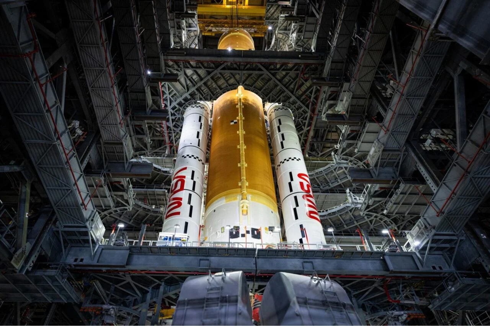
After reaching the Moon, space exploration shifted toward long-term survival. Space stations allowed astronauts to live and work in orbit for months, helping scientists understand how the human body reacts to microgravity. These missions transformed space from a destination into a laboratory.
Over time, human spaceflight also became more cooperative than competitive. International projects like the International Space Station brought astronauts from different countries together, proving that space could unite nations rather than divide them. Long-duration missions improved life-support systems, medical knowledge, and psychological resilience, all of which are essential for future journeys to the Moon, Mars, and beyond. Human spaceflight evolved from short visits into preparation for becoming a multi-planet species.
After the Apollo Moon missions ended in 1972, the focus of human spaceflight shifted from brief exploration to long-duration presence in orbit. The Soviet Union launched Salyut 1 in 1971, the world’s first space station, followed by Skylab, launched by NASA in 1973 (NASA History Office). These early stations allowed astronauts to remain in space for weeks and months, providing the first data on how prolonged weightlessness affects the human body. Missions aboard Skylab demonstrated that humans could adapt to living in orbit, marking a critical transition from exploration to habitation.
Long-term space missions revealed significant physical changes caused by microgravity. Research conducted on Mir, launched in 1986, showed that astronauts experience muscle atrophy, bone density loss, and shifts in body fluids (European Space Agency – Human Research Program). Astronauts on Mir spent over 400 days in space, proving that humans could survive for extended periods beyond Earth (Roscosmos Space Agency). These findings helped scientists understand the limits of the human body and develop countermeasures such as resistance exercise and nutritional planning to maintain astronaut health.
The launch of the International Space Station (ISS) in 1998 marked the beginning of continuous human presence in space. Built through collaboration between NASA, ESA, Roscosmos, JAXA, and CSA, the ISS has hosted astronauts continuously since 2000 (NASA ISS Program). Research conducted aboard the station includes experiments in biology, physics, medicine, and Earth observation. Studies on the ISS have improved treatments for osteoporosis, advanced materials science, and deepened understanding of human adaptation to space. These missions transformed space from a destination into a working laboratory, preparing humanity for future missions to the Moon and Mars.
Robots extended humanity’s reach far beyond where humans could safely travel. Rovers explored Mars, probes visited distant planets, and spacecraft traveled beyond the Solar System. These missions provided critical data about planetary formation, potential life, and the boundaries of our cosmic neighborhood.
Unlike human missions, robotic explorers could operate in extreme environments for years without rest or risk to life. Landers and orbiters sent back high-resolution images, chemical analyses, and atmospheric data, reshaping our understanding of worlds like Mars, Saturn, and Jupiter. Each robotic mission acted as a scout for the future, identifying hazards, resources, and scientific targets—quietly preparing the path for the next generation of human exploration.
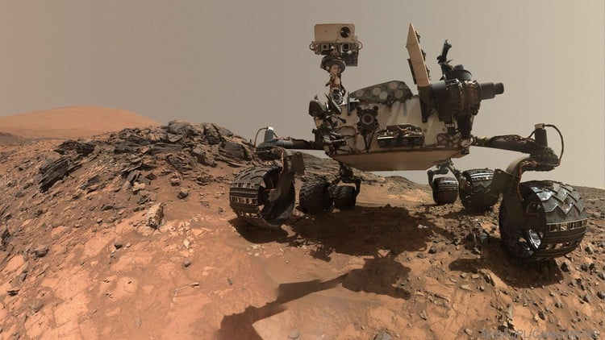
Robotic missions allowed humanity to explore environments too distant or dangerous for human astronauts. In 1977, NASA launched the Voyager 1 and Voyager 2 spacecraft to study the outer planets (NASA Jet Propulsion Laboratory). These probes provided the first detailed images of Jupiter’s Great Red Spot, Saturn’s rings, and Neptune’s atmosphere, transforming scientific understanding of the outer Solar System. In 2012, Voyager 1 became the first human-made object to enter interstellar space, offering direct measurements of the boundary between the Sun’s influence and the wider galaxy. These missions proved that robotic explorers could operate for decades far beyond Earth.
Mars rovers have played a crucial role in studying the possibility of life beyond Earth. Sojourner, part of the Mars Pathfinder mission, landed in 1997, becoming the first rover to operate on another planet (NASA Mars Exploration Program). Later rovers such as Spirit, Opportunity, Curiosity, and Perseverance analyzed Martian soil, rocks, and climate. In 2018, data from Curiosity confirmed the presence of ancient organic molecules and seasonal methane variations, suggesting Mars once had conditions suitable for life (NASA JPL). Perseverance, which landed in 2021, began collecting rock samples for future return to Earth, marking a new phase of planetary science.
Robotic spacecraft have also expanded knowledge of planetary formation and cosmic boundaries. Missions such as Cassini-Huygens (1997–2017) revealed Saturn’s complex ring system and discovered subsurface oceans on moons like Enceladus, raising the possibility of life beyond Earth (European Space Agency). The New Horizons mission, which flew past Pluto in 2015, showed that the dwarf planet is geologically active, challenging earlier assumptions about small icy worlds (NASA New Horizons Team). Together, these missions demonstrated that robots are essential scientific explorers, turning distant worlds into well-studied environments and redefining the scale of humanity’s cosmic neighborhood.
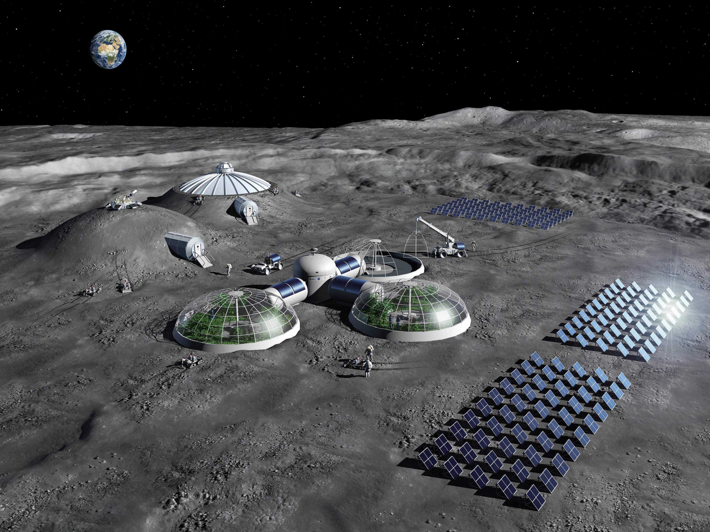
Today, space exploration is entering a new era driven by innovation and collaboration. Reusable rockets, private space companies, and plans for Moon bases and Mars missions suggest that humanity is preparing for a long-term presence beyond Earth. The future of space is no longer science fiction—it is the next chapter of human history.
Looking ahead, the future of space is about sustainability and purpose, not just exploration. Scientists are developing technologies to use resources found on the Moon and Mars, such as water ice for fuel and oxygen, making deep-space missions more realistic. At the same time, space exploration raises big questions about ethics, responsibility, and protecting other worlds. As humanity steps further into the cosmos, the challenge will be to explore boldly while ensuring that space remains a shared frontier for all.
A major shift in modern space exploration is the rise of reusable rocket technology, which has dramatically reduced launch costs. In 2015, SpaceX successfully landed the first orbital-class booster with Falcon 9, proving rockets could be reused rather than discarded (NASA Commercial Crew Program). This innovation lowered the cost of reaching orbit by tens of millions of dollars per launch, making space access more frequent and sustainable. Other organizations, including Blue Origin with its New Shepard rocket, have also demonstrated reusable systems (Blue Origin Research Archives). These developments are reshaping space exploration from government-led missions into a global space economy driven by innovation and competition.
Space agencies are now planning a long-term human presence beyond Earth. NASA’s Artemis program aims to return humans to the Moon, including the first woman and the first person of color, and to establish a sustainable lunar base by the late 2020s (NASA Artemis Program). The Moon is viewed as a testing ground for technologies such as life-support systems, radiation protection, and surface habitats that will be required for Mars missions. Meanwhile, SpaceX’s Starship is being developed as a fully reusable spacecraft designed to carry humans to Mars (SpaceX Starship Program). These efforts signal a shift from short missions to permanent exploration strategies.
Unlike the Space Race, the future of space is increasingly defined by international cooperation. Programs such as the International Space Station and the upcoming Lunar Gateway involve partnerships between NASA, ESA, JAXA, CSA, and other agencies (European Space Agency). Robotic and human missions now share data globally, accelerating scientific progress and reducing risks. In addition, space exploration is addressing challenges such as planetary defense, climate monitoring, and resource sustainability. This collaborative approach reflects a new understanding: humanity’s future in space is not about competition, but about shared responsibility and collective advancement beyond Earth.